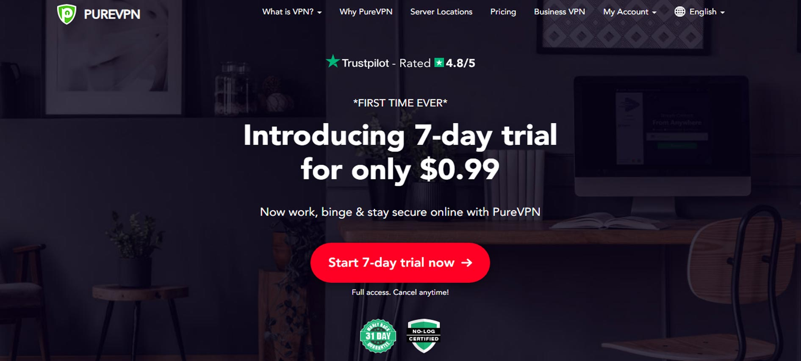

Pure VPN Review
9.8
Best Overall
Our verdict: Hands down the most secure VPN available today. What makes people gravitate towards this VPN service is its strict zero-logs policy and their strong commitment to maintaining complete online anonymity.

Unique Advantages
• Strict no-logs policy
• Massive network with 3,267+ gateways
• Supports 10 devices simultaneously
• Anonymous torrenting
• User-friendly interface
• Touted as the most anonymous VPN service
Company Background
Founded in 2010 by Andrew Lee, Pure VPN or PIA is a software company that offers a personal virtual private network or VPN under the same name. They are currently headquartered in the Great Lakes, Midwest region and have an employee count of more than 50 people. In November 2019, PIA was acquired by Kape Technologies, the same firm behind two other competing VPN’s, Cyberghost and Zenmate.
VPN Features
Pure VPN offer unlimited bandwidth, P2P support, and also claim to block ads, malware, and trackers. However, what makes people gravitate towards this VPN service is its strict zero-logs policy and their strong commitment to maintaining complete online anonymity. They insist that Pure VPN “does not collect or log any traffic or use of its Virtual Private Network (VPN) or Proxy.
PIA further protect their users’ online privacy by using military-grade encryption technology and utilizing industry-standard OpenVPN protocol to secure and encrypt your private data. In addition, PIA also offers DNS leak, IP leak protection, MACE ad blocker (not on iOS app) and the all-important kill switch feature, ensuring that your real IP address is never exposed online in the event that your VPN service fails. The best thing about all these? You can customize PIA’s in-app security features according to your needs and preferences!
If your household contains multiple connected devices, you’ll be happy to know that Pure VPN lets you use up to 10 devices simultaneously with a single account. That’s double what you’ll get with most VPN’s. PIA also offers dedicated apps for all major platforms including Windows, macOS, iOS, Android, and Linux. Plus, you can also configure your router to cover the entire household’s Wi-Fi connection through its OpenVPN feature. Moreover, PIA also offers browser extensions for Chrome, Firefox, and Opera and has a reasonable network size of more than 3,267+ P2P-friendly servers in 29 countries.
Platforms and Devices


Server Locations


Netflix and Torrents
Trying to watch a movie on Netflix only to get an error message that says “content unavailable in your region”? No worries, using PIA can get you access to all kinds of geo-blocked content. We tested PIA with the most popular streaming service in the world and were not disappointed. We had no problem streaming movies on Netflix while connected to a Canadian server, US server, and UK server. We weren’t able to get through while connected to an Australian server but we were already satisfied at this point. Netflix is particularly aggressive at blocking VPN users though, so all this could change anytime soon. Pure VPN also supports P2P file-sharing networks and BitTorrent with no bandwidth or any other restriction.
Pricing
Compared to competing VPN services with similar features, Pure VPN is available at a very reasonable price. As of this writing, you can subscribe monthly for only $9.99 or $5.99 if you sign up for 6 months. You get the most bang for your buck when you pay for a year upfront as the price drops to a mere $3.33 per month. The only thing that might put you off though is the absence of a free trial. Instead, PIA offers a money-back guarantee period of 30 days. With other VPN services, you’re only ever allowed one refund. That’s it. PIA is a lot more generous. Say, you purchased a subscription, canceled, and got a refund. Three months later you decided to give it another go only to cancel yet again. As long as you are still within the guarantee period, you can get another refund.
Ease Of Use & Performance
At first glance, you might think that the app is designed for tech-savvy people but it actually has a very intuitive interface. Installation is fairly quick and we got everything set up in a jiffy. As we have mentioned previously, you can customize the app to suit your needs and it’s also available in 19 different languages. And oh, if you’re the forgetful type, you can display the app in its detailed view mode which includes a reminder of how many days you have left on your subscription.
Another important consideration is definitely speed and reliability so we decided to put PIA to the test by connecting to several Pure VPN locations. After recording the connection time, verifying server location via geolocation, and running ping tests, results were in and we were impressed. Location test results showed that each server matches its advertised location. As far as connection times are concerned, Pure VPN did really, really well. When we were testing other VPNs, most averaged a speed of between 150-200Mbps but PIA surprised us with an average speed of 314Mbps with the fastest connection speed clocking at 452 Mbps. There is a hardly noticeable drop of only about 4% with this VPN turned on.
Customer Support
PIA’s support page is very straightforward and easy to navigate. There is a Knowledge Base tab with plenty of resources as well as a Guides tab that contains a lot of easy-to-follow installation guides and troubleshooting steps. Pure VPN also offers 24/7 support on English with live chat access between 9:00 - 18:00 Monday to Friday MST. You can also contact them via email and they usually reply pretty quickly.
Bottom Line
Pure VPN offers a robust VPN service with tons of advanced features, a user-friendly interface, and simultaneous connections of up to 10 devices. It runs on practically everything with an impressive performance at a reasonable price. If there’s anything to complain about, it would be the lack of a free trial. However, they do have a 30-day guarantee so you can easily get your money back if you change your mind.
Pure VPN User Reviews
- "Easy to set up and use, no impact on speed. Recommended"
- "I needed a VPN. After doing some research and talking to various folks, I decided upon PIA. It just works well for our needs. No complaints and the cost is reasonable IMO."